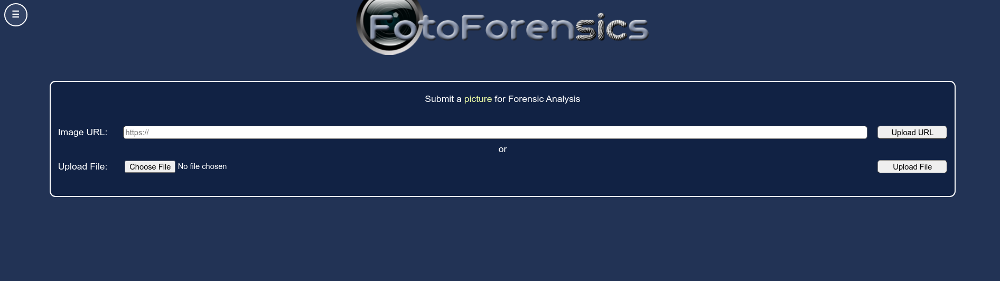
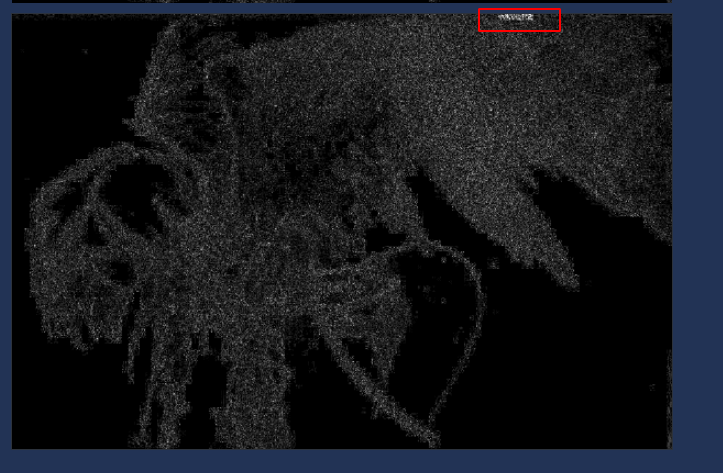
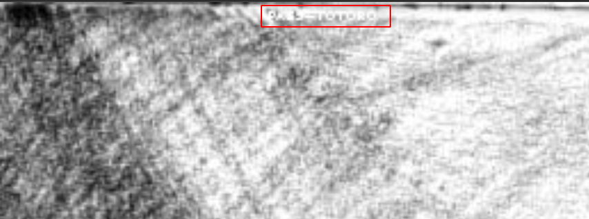
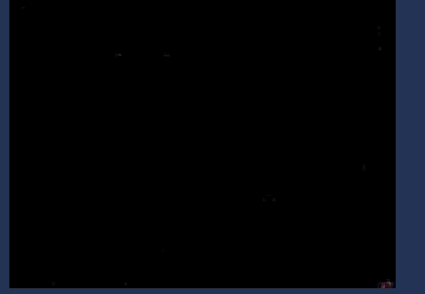
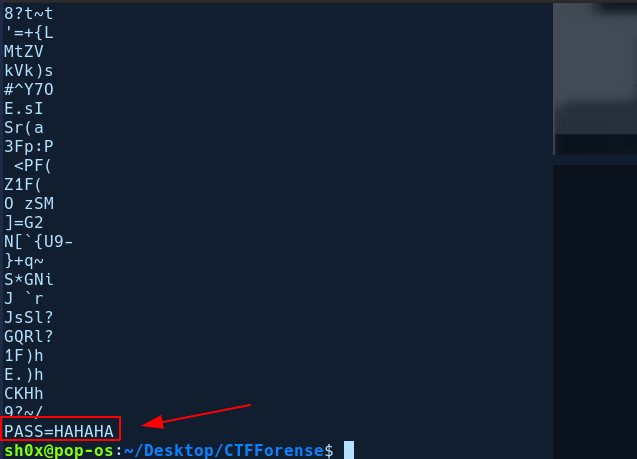
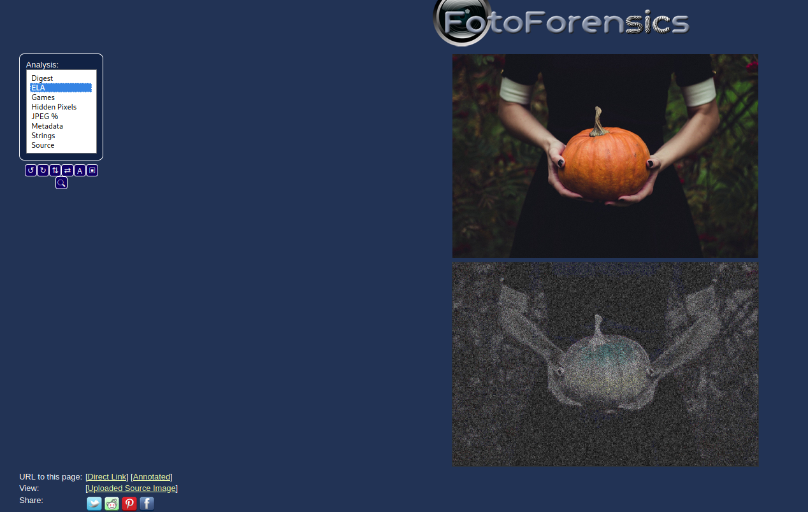
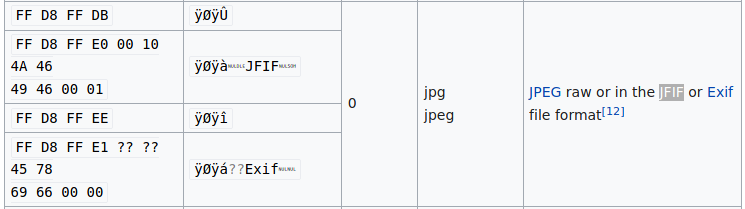
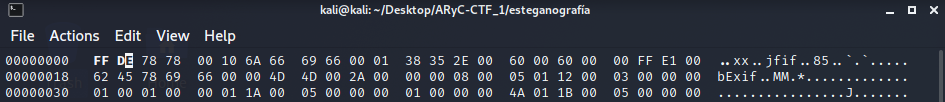
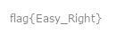

Desafíos de Esteganografía
Challenge 1
En este primer reto nos da una imagen y debemos de conseguir la flag a través de la imagen proporcionada. Lo primero que se debe comprobar siempre es que la imagen no haya sido modificada anteriormente. Para ello vamos a acceder a la siguiente página: http://fotoforensics.com/

Subimos la imagen proporcionada y encontramos lo siguiente:

Observamos que en esa parte ha sido modificada, si abrimos la imagen y hacemos Zoom en esa zona, podemos encontrar lo siguiente:

PASS=TOTORO, por tanto ya tenemos la flag del desafío: flag{TOTORO}
Challenge 2
En el segundo reto también nos proporciona una imgen, por tanto vamos a realizar el mismo proceso que el anterior.

Sin embargo, no ha habido éxito en este caso. El siguiente paso que se suele usar es tirar del comando strings el cual nos proporciona cadenas legibles de una imagen. Si hacemos uso de strings, observamos lo siguiente:

Tendríamos la flag de este segundo reto: flag{HAHAHA}
Challenge 3
Enunciado
El siguiente reto nos proporciona esta imagen, pero sabemos que hay algo detrás de ella y necesitamos encontrarlo.
{kind=link}
Solución propuesta
- Descargamos la imagen photo.jpg proporcionada en la interfaz web.
- Como siempre, verificamos que se trata de una imagen JPG, con la herramienta
fileo la herramientaexiftool:
$ file photo.jpg
photo.jpg: JPEG image data, JFIF standard 1.01, resolution (DPI), density 96x96,
segment length 16, Exif Standard: [TIFF image data, big-endian, direntries=2],
progressive, precision 8, 1920x1280, components 3
Aparentemente, el fichero es lo que parece, una imagen JPEG. Pasamos a analizar la imagen con alguna herramienta online para determinar si esconde algo que no se ve a simple vista. Alguna de estas herramientas son:
- 29a.ch Photo Forensic
- imageforensic.org
-
Utilizando fotoforensic.com no vemos nada extraño en el Error Level Analysis (ELA) que nos muestre una posible modificación de la imagen.

Sin embargo, si utilizamos la herramienta strings para extraer el
el contenido ASCII del fichero binario photo.jpg, obtenemos
algo muy interesante:
$ strings data/photo.jpg | tee tmp/step0.txt
JFIF
Exif
http://ns.adobe.com/xap/1.0/
<?xpacket begin='
' id='W5M0MpCehiHzreSzNTczkc9d'?>
...
...
=dSP57
>3TO0
ad`w
"https://www.dropbox.com/s/io1kaqznal2c10y/corrupted.zip?dl=0"
- Vemos que la última línea obtenida del comando es un enlace a dropbox. Si
descargamos el fichero de de Dropbox, mediante
wgeto copiando y pegando el enlace en el navegador e intentamos extraerlo con el comandounzipveremos que este fichero está protegido con contraseña.
$ wget $(tail -1 tmp/step0.txt | sed 's/\"//g') -O tmp/step1.zip
...
...
$ unzip tmp/step1.zip
Archive: tmp/step1.zip
[tmp/step1.zip] FOR0x.png password:
- Como vimos en el taller, podemos usar la herramienta
johnpara obtener la contraseña del ZIP, pero antes debemos transformar este fichero ZIP en un formato legible por dicha herramienta. Para ello usamos la herramientazip2john, que no está incluida en Kali Linux por defecto pero puede ser instalada mediate la ordensudo apt install zip2john:
$ zip2john tmp/step1.zip > tmp/step2.zip.txt
- Ahora si, estamos en condiciones para obtener la contraseña con
john:
$ john tmp/step2.zip.txt
Using default input encoding: UTF-8
Loaded 1 password hash (PKZIP [32/64])
Will run 2 OpenMP threads
Proceeding with single, rules:Single
Press 'q' or Ctrl-C to abort, almost any other key for status
Almost done: Processing the remaining buffered candidate passwords, if any.
Proceeding with wordlist:/usr/share/john/password.lst, rules:Wordlist
Proceeding with incremental:ASCII
- Si dejamos que
johnactúe, veremos que se demora muchísimo, por lo que podemos intentar realizar un ataque de diccionario en lugar de un ataque de fuerza bruta puro. Para ello, cancelamos la ejecución actual, pulsandoCtrl+Cy utilizamosjohncon algún diccionario.
Podemos usar el diccionario rockyou.txt, con las contraseñas más usadas en el mundo, el cual se encuentra alojado en /usr/share/wordlist/rockyou.txt.gz
en Kali Linux (Puede descargarse de github si no está disponible en la
distribución utilizada) Este fichero está comprimido en formado GZIP, por lo
que para usar este diccionario en john, tenemos que descomprimirlo primero,
utilizando la instrucción gzip:
$ gzip -cd /usr/share/wordlists/rockyou.txt.gz | john --stdin step2.zip.txt
Using default input encoding: UTF-8
Loaded 1 password hash (PKZIP [32/64])
Will run 2 OpenMP threads
Press Ctrl-C to abort, or send SIGUSR1 to john process for status
pumpkinpie (step1.zip/FOR0x.png)
1g 0:00:00:00 33.33g/s 682666p/s 682666c/s 682666C/s christal..michelle4
Use the "--show" option to display all of the cracked passwords reliably
Session completed
- Ya tenemos la contraseña del fichero zip (
pumpkinpie), así que pasamos a descomprimirlo:
$ unzip -P "pumpkinpie" tmp/step1.zip -d tmp/
Archive: tmp/step1.zip
inflating: tmp/FOR0x.png
- Al descomprimir el ZIP, aparentemente hemos obtenido una imagen PNG, pero
si volvemos a usar la herramienta
file, vemos que no lo es:
$ file tmp/FOR0x.png
tmp/FOR0x.png: data
El comando `file` nos indica que es un fichero binario `data`. Utilizando de
nuevo la herramienta strings, observamos que la segunda línea devuelta por
el comando es jfif.
$ strings tmp/FOR0x.png
..xx
jfif
bExif
...
...
s_$`
&[^b'
;wV;
Si entramos en [esta](5) página de wikipedia y buscamos `jfif`, veremos que
se trata de la cabecera de una imagen JPEG, pero corrupta, pues la cabecera no se corresponde completamente.

- Podemos comprobar de forma más exacta que la cabecera del fichero JPEG
está corrupta utilizando un visor hexadecimal como
hexdumpy filtrando la primera línea:
$ hexdump -C tmp/FOR0x.png | head -1
00000000 2e 2e 78 78 00 10 6a 66 69 66 00 01 38 35 2e 00 |..xx..jfif..85..|
Observamos que los 4 primeros bytes no se corresponden con la cabecera
estándar de un fichero JPEG. Para recuperar este fichero, tendremos que
restaurar la cabecera, utilizando un editor hexadecimal como hexedit
(no está instalado por defecto en Kali Linux, se puede instalar con el comando
sudo apt install hexedit:
$ cp tmp/FOR0x.png solution.jpeg
$ hexedit solution.jpeg
Esto nos abrirá un editor interactivo en el que podremos editar los 4 primeros bytes, como se ve en la siguiente imagen:

Una vez corregidos los cuatro primeros bytes, plusamos Ctrl+x y respondemos
y para guardar los cambios.
- Una vez editado el fichero, solo tenemos que abrirlo con nuetro visor de imágenes favorito y veremos la solición al challenge en la esquina inferior derecha:
$ feh solution.jpeg

Resumen de comandos para impacientes
strings data/photo.jpg | tee tmp/step0.txtwget $(tail -1 tmp/step0.txt | sed 's/\"//g') -O tmp/step1.zipzip2john tmp/step1.zip > tmp/step2.zip.txtgzip -cd /usr/share/wordlist/rockyou.txt.gz | john --stdin tmp/step2.zip.txtunzip -P "pumpkinpie" tmp/step1.zip -d tmp/cp tmp/FOR0x.png solution.jpeghexedit solution.jpeg- Cambiamos
2e 2e 78 78 00 10porff d8 ff e0 00 10. - Guardamos el fichero con
Ctrl-xy pulsamosy. - Abrimos el fichero
solution.jpegcon un visor de imágenes.
Documentado este último reto por Rafael Savariego Fernández : Rafael